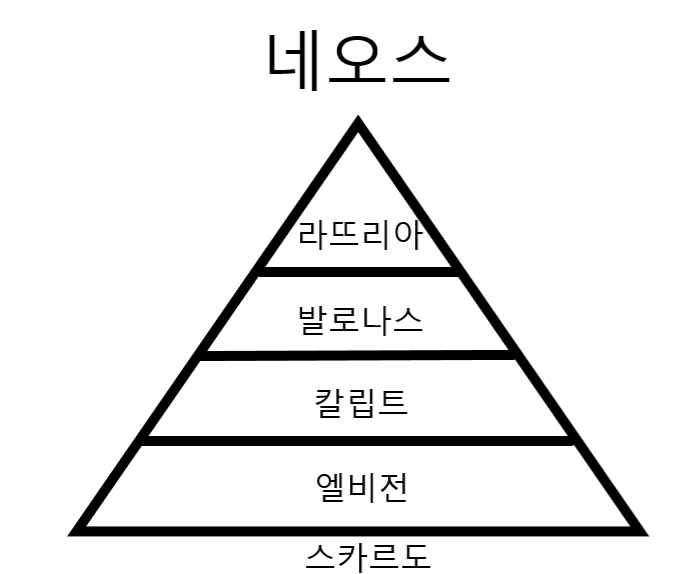

근영교 계급
근영교의 계급은 총 여섯가지로 구성되어있다.
이계급은 절대적이며 아랫계급은 특별한상황을 제외하곤 윗계급의말을 거역할수없다.
근영교의 계급은 다음과같다
------------------------------------------------------------------------
- 근영교 유일신 네오스
- 근영교 교주 라뜨리아
- 근영교 간부 발로나스
- 근영교 광신도 칼립트
- 근영교 신도 엘비전
- 근영교 이단 스카르도
------------------------------------------------------------------------

근영교 계급표 이미지요약
만약 자신의 등급을 추정해보고싶다면 이곳 을 클릭해라
*이 테스트는 단지 추정일뿐 정확하지 않습니다*